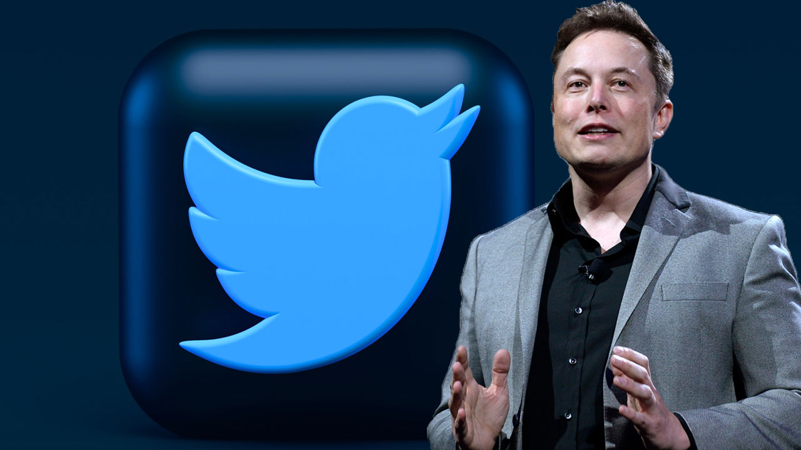
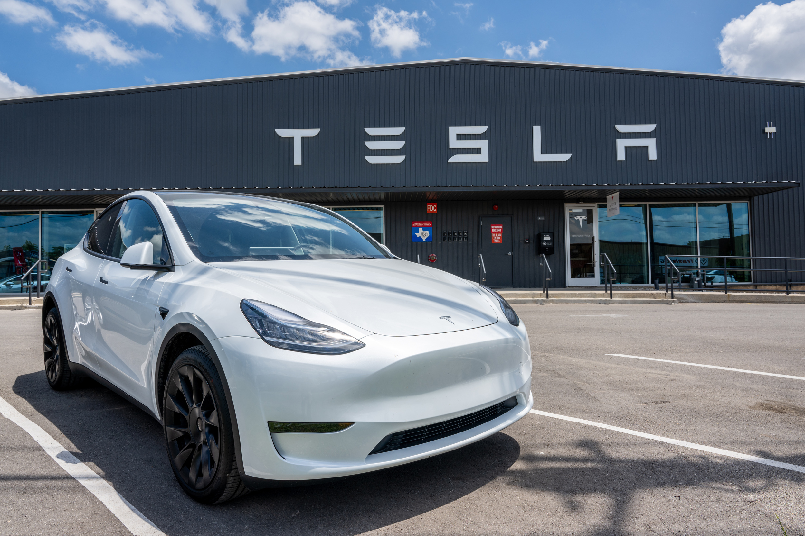

Biografía de Elon Musk
Elon Musk es un visionario empresario, ingeniero e inventor sudafricano. Nació el 28 de junio de 1971 en Pretoria, Sudáfrica.
Es conocido por ser el fundador y CEO de SpaceX, una empresa de transporte aeroespacial; Tesla, una compañía de vehículos eléctricos; Neuralink, que busca desarrollar interfaces cerebro-máquina; y The Boring Company, que se enfoca en la infraestructura de túneles.
Musk también fue cofundador de PayPal, un servicio de pagos en línea que se convirtió en una de las plataformas de pago más utilizadas en internet.

SpaceX es una de las empresas más destacadas de Musk, dedicada a reducir el costo de los viajes espaciales y eventualmente facilitar la colonización de Marte.
También ha estado involucrado en la creación de Hyperloop, un concepto de transporte terrestre de alta velocidad, y ha hablado sobre su interés en la inteligencia artificial y la posibilidad de establecer una base humana permanente en Marte.
Tesla, por otro lado, es conocida por sus innovadores vehículos eléctricos, que han ayudado a popularizar la tecnología de vehículos eléctricos y han hecho importantes contribuciones al avance de la industria automotriz sostenible.